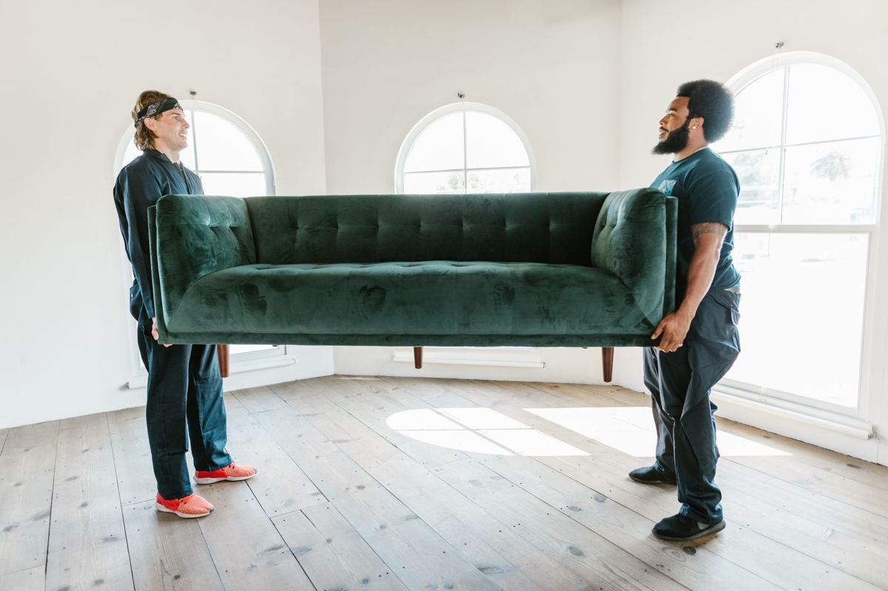

Quick answer: junk removal means a crew comes to you, does all the lifting, and takes the stuff away in one visit. You point at what goes. They carry it out from wherever it sits, load it, sweep the space, and haul it off to be donated, recycled, or disposed of properly. Before any of that happens you get a firm number, and you approve it or you do not. Nothing is loaded until you say yes.

Nobody budgets for junk. It piles up quietly, then a move, a remodel, or an estate puts it on a deadline. Most people have never hired a hauler before and are not sure what they are actually buying. This guide walks through what happens from the first call to the empty room.
What happens when you call
The first conversation is short. You describe what you have and where it is: a garage, a back bedroom, a unit you just emptied, a pile the contractor left in the driveway. Photos help more than words do, and a couple of quick pictures from your phone are usually enough to tell us what the job involves.
From there we set a time. Pickups run seven days a week, and same-day is typical across most of DFW when you catch us before the routes fill. You do not need to be sure about every item on that call. Anything you are undecided about can be sorted out in person with the crew standing in front of it.
What you will not get is a pressure pitch. If your city will take the pile for free on its next collection day and you are not in a hurry, we will tell you that. Dallas sets out brush and bulky items on a monthly schedule and Plano runs its own bulky waste collection calendar. Checking yours first costs nothing. If you are in Plano, our Plano junk removal page lists the city programs alongside the jobs they will not cover.
What the crew does on arrival
The crew walks the job with you before touching anything. You show them what goes, they ask about anything ambiguous, and they give you a firm number on the spot. That number covers the labor, the hauling, and the disposal fees. It is settled before the first item is lifted, and the quote is the bill.
Once you approve it, the work is theirs. They carry everything out from where it actually sits, which is the part people underestimate. Upstairs bedrooms, floored attics, backyards, sheds, and behind fences are all normal. Nothing needs to be dragged to the curb or the driveway first, and you do not need to lift anything or supervise. Most people go do something else and come back to an empty room. Whether that visit can happen the same day you call depends on a handful of things, laid out in same-day junk removal: what typical actually means.
Floors and door frames get protected on the way out. Heavy or awkward pieces get broken down when that is the safer way through a doorway. When the load is on, the space is swept clean rather than left with the dust and screws behind where the pile used to be.
What gets loaded, and what does not
The list of what a crew will take is long and boring: furniture, mattresses, appliances, electronics, exercise equipment, carpet, yard debris, remodel material, and the general contents of a garage or a closet. The full inventory is on what we will and will not take, along with the edge cases people actually ask about.
The short list of refusals matters more. Household hazardous waste is the one category no licensed hauler can take: paint, stain, solvents, motor oil, gasoline, propane tanks, pool chemicals, pesticides, and anything containing asbestos. Every city in the metroplex runs a household chemical collection program that accepts these from residents for free, and the TCEQ household hazardous waste page explains how they work statewide. Ask us and we will point you at the right one for your address.
A couple of items need an extra handling step rather than a refusal. Refrigerators and freezers require freon recovery, and tires are routed separately in parts of DFW. Both get flagged before loading so nothing turns into a surprise.
What makes a job harder or easier
Two jobs that look identical from a photo can play out very differently, and it comes down to access rather than the pile itself.
- Stairs. A sleeper sofa coming down from a third-floor walkup is a genuinely different job from the same sofa in a ground-floor living room. Stairs and walkups are routine for us, whether that is getting a couch down three flights in McKinney or a sofa out of a Little Elm complex. A ground-floor pickup, like most of what we handle in Frisco, is usually the quicker of the two.
- Long carries. A deep backyard, a narrow side gate, or a unit at the far end of a storage facility all add real time.
- Parking. The truck needs somewhere to sit near the building. Apartment complexes and offices often have rules about where and when, and a two minute call to the office beforehand saves an hour on the day.
- Elevators and building hours. Some buildings require a reserved service elevator or restrict move-out times.
- Sorting. A pile that is already decided goes fast. A job where things still need to be picked through, which is normal for estates, takes longer and should be planned that way.
None of this is your problem to solve on your own. Mention it when you get in touch and it gets handled in the plan rather than discovered on arrival.
Where it goes after it leaves
A load does not go straight to a landfill in one piece, and you should ask any hauler what happens to yours. Usable furniture and household goods get separated out and taken to donation, and a Habitat ReStore is the common destination in this area. Our DFW donation guide covers who takes what if you would rather run it yourself.
Metal and cardboard go to recyclers. Electronics get routed the way the EPA recommends rather than buried. What is genuinely spent goes to a licensed facility, which is the whole point of hiring somebody with a name and an address. Illegal dumping fines in Texas can land on the person who hired the hauler, so "where does this actually go?" is not a rude question. It is the smartest one you can ask.
Junk removal versus renting a dumpster
For a one-time cleanout, full-service removal usually wins once you count everything involved. A dumpster means the rental itself, the permit some cities require for street placement, and every minute of the loading done by you. A crew shows up, clears it, and the driveway is empty the same day with no rusty box sitting out front for a week.
Dumpsters earn their keep on multi-week renovations where debris appears daily. If a contractor is producing scrap for a month, rent the box. If the junk already exists and you want it gone, book the crew. Dumpster rental vs junk removal walks through the HOA and city rules, and what neither option will accept.
The same visit-and-clear pattern covers most of what people call about: a unit you are handing the key back on, in storage unit junk removal; a full house, in hoarder house junk removal; a tenant turnover, in rental property cleanout; or a single dead fridge, in appliance and electronics disposal.
Questions to ask before you book any hauler
- Is the number all-in, or are disposal fees and labor extra?
- Is the crew employed by the company, or day labor hired just for your job?
- What happens to donatable items, and can I get a donation receipt?
- Where does the load actually get disposed of?
- Is everything confirmed before loading starts?
Any reputable company answers all five without flinching. If you want to skip to your specific job, the services list breaks it out, and the garage cleanout checklist is a good starting point for the most common one.
Frequently asked questions
How does junk removal work in DFW?
You describe the job or send a photo, the crew comes out and looks at it, and you get a firm number before anything is loaded. If you approve it, they do all the lifting, clear the space, sweep up, and take everything away in one visit. Ask for a free quote and we will come look.
Do I have to move anything to the curb first?
No. The crew carries everything out from wherever it sits, including upstairs, attics, backyards, and sheds. Point at what goes and leave the rest to them.
Is junk removal better than renting a dumpster?
For one-time cleanouts, usually yes once you count the rental, the permit, and your own loading time. Dumpsters win for long renovations producing debris daily.
Are there items that are harder to dispose of?
Very few. We take mattresses and electronics either way. Only refrigerators and freezers need freon recovery, and tires get handled separately, and we flag both before we load.
Related reading: The garage cleanout checklist, hot tub, shed, and playset removal, and where to donate what still has life in it. For the full inventory, see what a junk removal crew will and will not take.